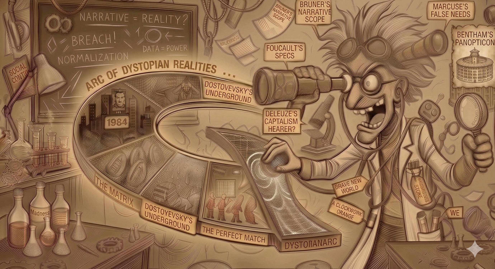
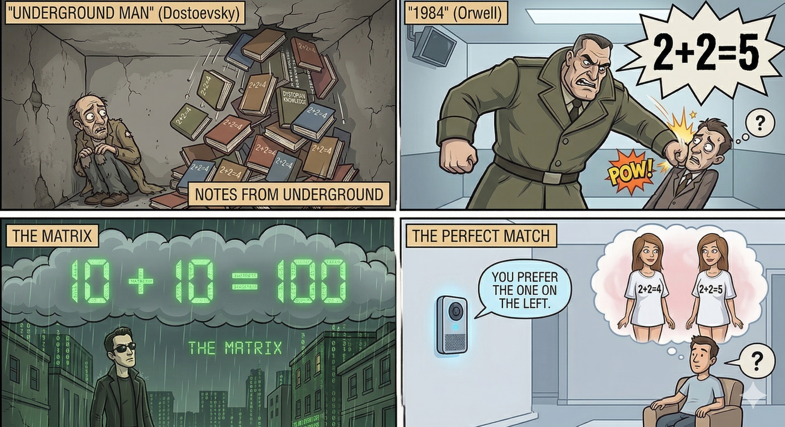
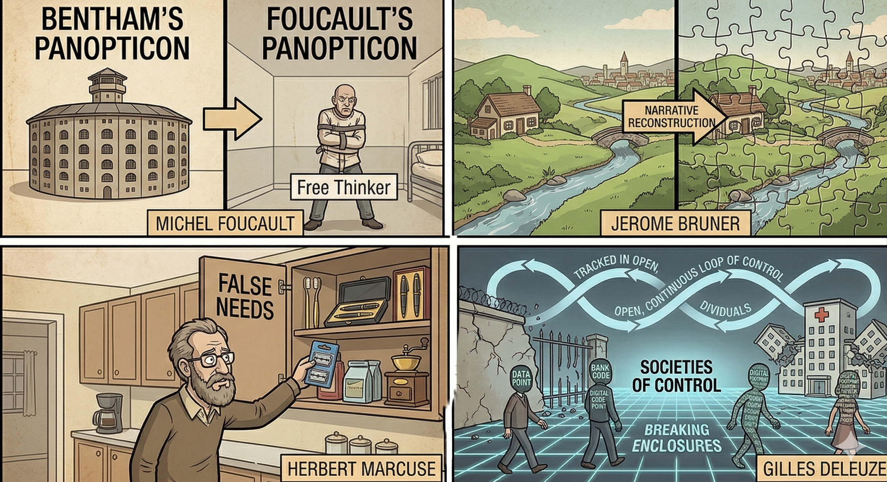
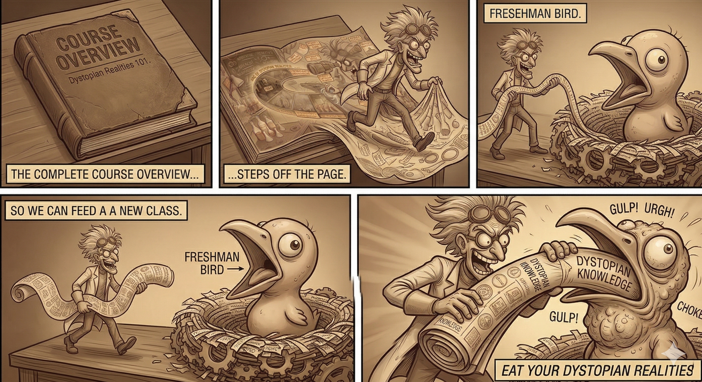
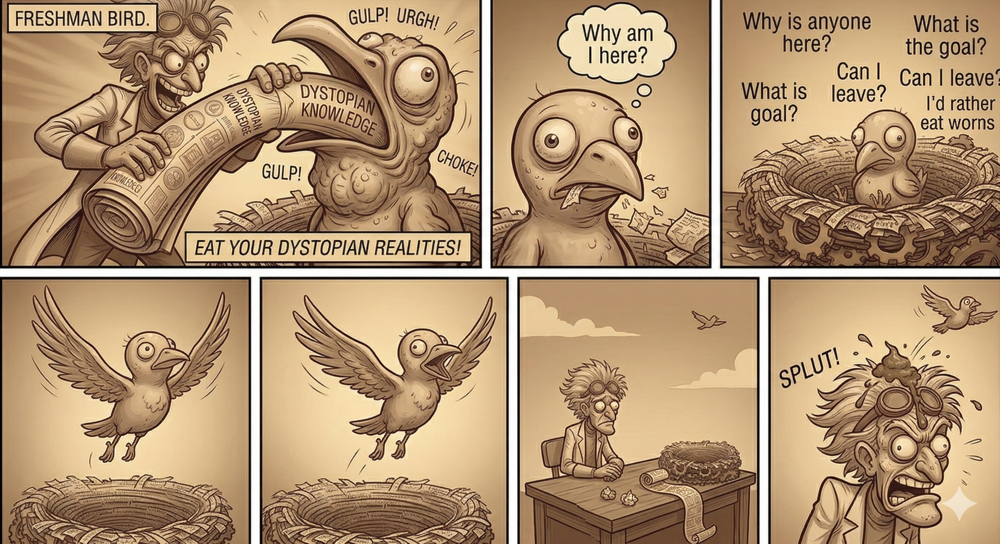

for Tales of Defiance to Mind Control in the Modern
Age
Scott Axelrod
Course Overview:

Look at modern age stories where societies impose/offer mind
control.
Consider characters who are rebelling.
Ask questions through various lenses.
Stories in The Dystopian Arc

Dostoyevsky’s Undeground Man, isolated and being crushed by 2+2=4
reason .
Winston from “1984” being pounded by Big Brother to truly believe
2+2=5.
Neo from “The Matrix” perceiving that his entire world is a computer
simulation, seeing the simulation of 2+2=4 in binary.
Sai from “The Perfect Match” being nudged by the AI agent Tilly to
tell him that he prefers the beautiful girl in the “2+2=4” T-shirt.
Some Lenses

Michel Foucault:
The panopticon (prison) of thought.
The surveillance state.
Postmodernism.
Civilization constraining madness.
Jerome Bruner: Narrative Analysis
Herbert Marcuse: Control through false needs.
Gilles Deluze:
Foucault’s “enclosures” (prisons, schools, hospitals) are breaking
down.
We are no longer “individuals” in a room; we are “dividuals”—data
points, bank codes, and digital footprints that are tracked in an open,
continuous loop of control.
It’s not about being locked in a cage; it’s about being part of a
network where the “control” is fluid and constant.
Course Parody:

I can get pretty excited by my own stuff.
Watch out that I don’t force a point of view on you.
Course Goals:

You should ask questions.
Thought-opening not thought-stopping.
So you can fly away in your own individual way.
Even if it means rejecting my framing.
gary larson:
two prisoners handing by rests, just cloth on privates, dirty,
beards
little window with bars
one looking out: “hey, I can see me house from here”